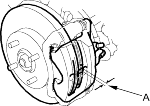
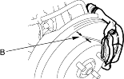
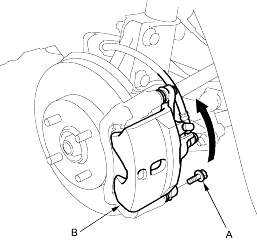
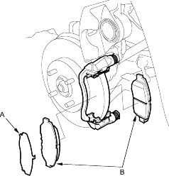

|
Frequent inhalation of brake pad dust, regardless of material composition, could be hazardous to your health.
|
 CAUTION
CAUTIONInspection (KX Model)
- Raise the front of the vehicle and make sure it is securely supported. Remove the front wheels.
- Check the thickness of the inner pad (A) and outer pad (B). Do not include the thickness of the backing plate.
Brake pad thickness:
Standard: |
9.5 – 10.5 mm (0.37 – 0.41 in.) |
Service limit: |
1.6 mm (0.06 in.) |
Inner pad:

Outer pad:

- If the brake pad thickness is less than the service limit, replace all the pads as a set.
- Remove the bolt (A) and pivot the calliper (B) up out of the way. Check the hose and pin boots for damage and deterioration.

- Remove the pad shim (A) and pads (B).
